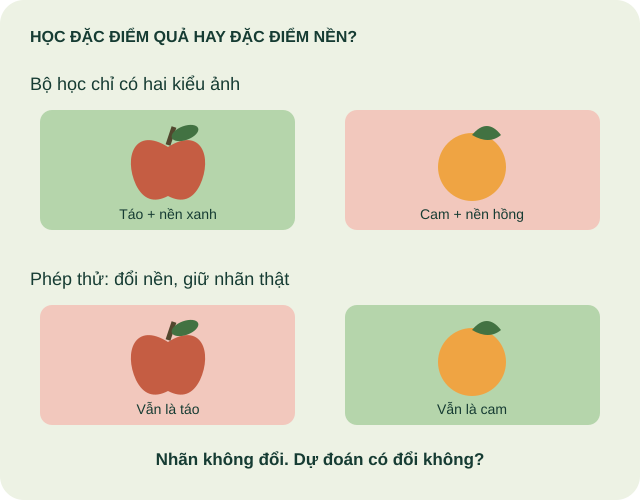

Ta viết quy tắc
Nếu nhiệt độ trên 30°C → bật quạt.
31°C→Điều kiện có sẵn→Quạt bật
Ví dụ chương trình theo quy tắc; riêng thao tác này không đủ để gọi là AI. Hệ chuyên gia có thể dùng nhiều quy tắc và suy luận.
PHÒNG HỌC MỞ · DÀNH CHO GIÁO VIÊN THPT
Hiểu bản chất. Thử có bằng chứng.
Từ dữ liệu và mô hình đến cách sử dụng AI có trách nhiệm trong lớp học THPT.
Không cần biết lập trình · Có hoạt động không dùng máy tính
Học ngay trên trang · Chi tiết kỹ thuật có thể mở khi cần
Dữ liệu: đưa cho mô hình nhiều ví dụ có nhãn.
Minh họa quy trình · không phải mô hình nhận dạng lá01 / HIỂU ĐÚNG TỪ ĐẦU
AI là lĩnh vực xây dựng hệ thống thực hiện những nhiệm vụ như nhận dạng, dự đoán, tạo nội dung hoặc ra quyết định. Không phải hệ thống AI nào cũng học từ dữ liệu.
Nếu nhiệt độ trên 30°C → bật quạt.
Ví dụ chương trình theo quy tắc; riêng thao tác này không đủ để gọi là AI. Hệ chuyên gia có thể dùng nhiều quy tắc và suy luận.
Cho nhiều ảnh lá đã gắn nhãn → học đặc điểm → dự đoán nhãn ảnh mới.
Con người vẫn thiết kế bài toán, chọn dữ liệu và kiểm tra kết quả. “Học” là điều chỉnh tham số, không đồng nghĩa với hiểu như người.
Mạng nơ-ron nhiều lớp
Đây là các cách học. Học sâu là họ kỹ thuật và có thể kết hợp với các cách học trên, kể cả học tăng cường.
Với bài toán nhận dạng lá: dữ liệu là ảnh và nhãn; thuật toán học là cách điều chỉnh để giảm sai; mô hình là kết quả đã học; đầu ra là nhãn dự đoán; phản hồi là kết quả đối chiếu để tìm lỗi và cải tiến.
Huấn luyện thay đổi tham số. Suy luận dùng tham số đã học cho mẫu mới. Phản hồi không tự động làm mô hình học lại.
| Nhiệm vụ | Đầu ra và ví dụ |
|---|---|
| Phân loại (phân lớp) | Chọn nhãn đã định trước: lá đơn hay lá kép. |
| Phân cụm | Tìm các nhóm giống nhau khi chưa có nhãn đích; con người diễn giải nhóm. |
| Hồi quy | Ước lượng số: ngày mai cần bao nhiêu suất ăn. “Dự đoán” là từ rộng, cũng có thể dùng cho phân loại. |
| Tạo sinh | Tạo nội dung mới: đoạn văn, hình ảnh, âm thanh hoặc mã. |
Thị giác máy tính xử lý ảnh/video; xử lý ngôn ngữ tự nhiên xử lý ngôn ngữ. Đây là nhóm nhiệm vụ, không phải các cách học tách biệt.
TỪ MÔ HÌNH ĐẾN HỆ THỐNG
Ví dụ minh họa: hỗ trợ dự báo số suất ăn. Hệ thống còn cần dữ liệu đúng thời điểm, giao diện và người phê duyệt.
Dữ liệu cung cấp thông tin; mã xử lý làm sạch, chuyển đổi; mô hình dự đoán; quy tắc kiểm tra điều kiện; giao diện giúp con người hiểu và phản hồi.
Ví dụ: dự báo đúng 300 suất nhưng giao diện hiển thị nhầm ngày vẫn khiến hệ thống không dùng được.
Vòng sử dụng: nhận dữ liệu mới → xử lý → suy luận → người duyệt → thực hiện → ghi nhận kết quả.
Vòng cải tiến: chọn phản hồi đáng tin → sửa dữ liệu hoặc phần mềm → huấn luyện nếu cần → đánh giá → phát hành phiên bản mới.
Không phải lỗi nào cũng sửa bằng huấn luyện lại. Thiếu lịch nghỉ: sửa dữ liệu; tính sai ngày: sửa phần mềm; nhãn sai: sửa nhãn; mô hình kém trên bối cảnh mới: xem lại dữ liệu và cách học.
Sĩ số, đăng ký ăn, lịch học.
Thiếu lịch nghỉ? Dừng và bổ sung.
Đưa ra một đề xuất, có thể sai.
Giáo viên kiểm tra trước khi đặt.
Bước 1: thu thập dữ liệu phù hợp với ngày cần dự báo.
Phản hồi giúp phát hiện vấn đề. Mô hình không tự học lại chỉ vì có người sửa kết quả; cần quy trình cập nhật và đánh giá. Đây là sơ đồ minh họa, không phải công cụ đặt suất ăn.
Vòng đời: xác định vấn đề → chuẩn bị dữ liệu → thiết kế → kiểm thử → triển khai → theo dõi, xử lý sự cố → cập nhật hoặc ngừng dùng. Khi ngừng dùng, xử lý dữ liệu lưu theo quy định của đơn vị.
Người dùng đặt yêu cầu và kiểm tra đầu ra. Người vận hành cấu hình, theo dõi và dừng hệ thống khi cần. Người tùy chỉnh sửa dữ liệu, hướng dẫn hoặc cấu hình cho bối cảnh cụ thể. Một người có thể đảm nhiệm nhiều vai trò.
02 / DỮ LIỆU ĐỊNH HÌNH KẾT QUẢ
Muốn biết mô hình có dùng được, hãy thử với dữ liệu mới, độc lập với quá trình huấn luyện.
Một đơn vị dữ liệu: một ảnh chiếc lá.
Dấu hiệu dùng để phân biệt: hình dạng, màu, mép lá. Mạng học sâu có thể học đặc trưng từ ảnh.
Đáp án gắn cho mẫu: “lá đơn” hoặc “lá kép”, theo tiêu chí đã thống nhất.

Dữ liệu tốt: đúng nhãn, đủ mẫu, đa dạng, đại diện cho nơi sử dụng và được phép dùng. Thêm ảnh gần trùng không bù được một bối cảnh còn thiếu.
Điều chỉnh tham số từ các ví dụ.
Chọn cấu hình, quyết định khi nào dừng.
Đánh giá cuối cùng sau khi đã chốt mô hình.
Tỉ lệ 70/15/15 chỉ là ví dụ. Ảnh gần trùng, cùng một đợt chụp hoặc cùng người có thể làm rò rỉ dữ liệu giữa các tập. Nếu liên tục sửa mô hình theo tập kiểm tra, cần một tập kiểm tra mới.
Nếu mọi lá đơn đều chụp trên nền xanh và mọi lá kép trên nền hồng, mô hình có thể học nhầm nền.
Minh họa rủi ro, không phải kết quả chạy mô hình. Hãy kiểm chứng bằng ảnh cùng loại lá trên nhiều nền khác nhau.
Tỉ lệ đúng trung bình cao vẫn có thể che khuất một nhóm hoặc một điều kiện làm rất kém.
Ví dụ minh họa riêng với bài toán lá khỏe / lá sâu bệnh, không phải kết quả chạy trên trang:
| Nhãn thật | Đoán khỏe | Đoán sâu bệnh |
|---|---|---|
| 10 ảnh lá khỏe | 9 đúng | 1 sai |
| 10 ảnh lá sâu bệnh | 4 sai | 6 đúng |
Đúng (9 + 6)/20 = 75%, nhưng bỏ sót 4/10 lá sâu bệnh. Hãy xem từng loại lỗi và hậu quả, không chỉ số trung bình. Điểm “99%” của một ảnh cũng không bảo đảm nhãn đúng.
Nếu dùng bộ ảnh này để chọn cách cải tiến, nó đã trở thành dữ liệu phát triển; cần ảnh độc lập khác để đánh giá cuối.
Ví dụ giả định: mỗi ô là một nhãn trong một điều kiện. Chọn cách thu thập để quan sát.
Các số trong bảng là dữ liệu minh họa do website tạo, không phải kết quả thí nghiệm. Phủ đủ các ô không bảo đảm chính xác; còn cần đúng nhãn, đủ biến thiên trong từng ô và kiểm tra độc lập. Cân bằng lớp có ích cho phép so sánh này, nhưng không phải yêu cầu máy móc cho mọi tập dữ liệu thực tế.
GIẢI THÍCH BẰNG SO SÁNH
Ta quan sát đặc điểm chiếc lá. Mạng nơ-ron nhận dữ liệu dạng số và kết hợp tín hiệu qua các lớp.
Ta rút kinh nghiệm. Khi huấn luyện có giám sát, thuật toán dùng sai khác với nhãn để cập nhật trọng số và bias.
Ta vận dụng hiểu biết. Mô hình dùng tham số đã học để dự đoán; gặp bối cảnh lạ vẫn có thể sai.
Mạng nơ-ron lấy cảm hứng từ hệ thần kinh, nhưng nơ-ron nhân tạo là phép tính. Cách nói “máy học” không có nghĩa máy có ý thức, cảm xúc hay hiểu như con người.
Hình dung hai tín hiệu đã được chuyển thành số: x₁ = 0,8 và x₂ = 0,3. Đây là ví dụ phép tính, không phải số đo thật của trái cây.
Bias là số cộng thêm để dịch chuyển đáp ứng, không phải “thiên vị” theo nghĩa đạo đức. Trọng số cũng không đơn giản là “mức thông minh”. Bạn sẽ quan sát các thành phần này trực tiếp trong Playground bên dưới.
| Activation | Phép biến đổi | Hiểu và thử thế nào? |
|---|---|---|
| ReLU | max(0, z) | z âm cho 0; z dương giữ nguyên. Không giới hạn ở 1 và không tự là xác suất. Thử kéo bias từ âm sang dương. |
| Sigmoid | 1 / (1 + e⁻ᶻ) | Nén về 0–1. z = 0 cho 0,5. Có thể dùng cho đầu ra nhị phân khi thiết kế và huấn luyện phù hợp; một con số 0–1 bất kỳ chưa phải xác suất đáng tin cậy. |
| Tanh | tanh(z) | Nén về −1 đến 1, z = 0 cho 0. Thử z lớn: đầu ra tiến gần 1, thay đổi ít hơn. |
| Linear | z | Giữ nguyên. Nhiều lớp chỉ có biến đổi affine và kích hoạt tuyến tính vẫn gộp thành một biến đổi affine. Với đầu vào x₁, x₂, không tạo được ranh giới bao vòng tròn. |
Phi tuyến giúp mạng biểu diễn quan hệ phức tạp hơn. Không có hàm nào tốt nhất cho mọi bài toán; hàm kích hoạt là lựa chọn thiết kế, khác với trọng số được học. “Softmax” thường gặp ở đầu ra phân loại nhiều lớp: biến cả một vector điểm thành các giá trị không âm có tổng bằng 1.
03 / THỰC HÀNH TRÊN CÔNG CỤ GỐC
Đây là công cụ chính thức được nhúng trực tiếp. Không cần tự tạo mô hình hoặc nhập lại cấu hình ban đầu. Bắt đầu bằng bài 1, nhấn ▶ bên trong khung và quan sát.
Cách đọc: mỗi chấm là một mẫu; x₁, x₂ là hai đặc trưng; màu chấm là nhãn thật; màu nền là dự đoán. Giống việc biểu diễn một quả bằng độ tròn và độ nhám, nhưng dữ liệu trong khung là dữ liệu toán học tổng hợp.
BÀI 1 · TỪ DỰ ĐOÁN BAN ĐẦU ĐẾN RANH GIỚI
Nhấn ▶, theo dõi nền dự đoán và Training loss. Sau khoảng 100–200 epoch, nhấn Pause để đọc kết quả; không có yêu cầu phải đạt một mức loss cố định.
Cần giải thích: chấm dữ liệu đứng yên trong khi nền màu thay đổi — điều gì đang thay đổi bên trong mô hình?
Chọn bài khác sẽ tải lại cấu hình khởi đầu và mất tiến trình đang chạy trong khung. Các bài dùng cùng seed để giảm một nguồn khác biệt; khi tự đổi thiết lập hoặc sinh lại dữ liệu, cần kiểm soát điều kiện so sánh.
Khung tự tải khi đến gần phần này; quá trình huấn luyện bắt đầu bằng nút ▶ của Playground. Nút tạm dừng trên đầu website không điều khiển được công cụ khác nguồn. Nếu mạng trường chặn khung hoặc màn hình nhỏ, dùng “Mở rộng trong tab riêng”. Không cần đăng nhập Playground.
Quan sát ba nơi: chấm dữ liệu → trọng số trên đường nối và đầu ra nơ-ron → vùng dự đoán cùng Training/Test loss. Đường dày biểu thị độ lớn trọng số; màu biểu thị dấu. Màu đậm không bảo đảm đúng.
Giải thích mong đợi: các mẫu giữ nguyên trong lượt chạy; thuật toán điều chỉnh tham số để giảm hàm mất mát. Ranh giới thay đổi là hệ quả của tham số thay đổi. “Học” ở đây không có nghĩa máy tự biết thêm một loài quả hoặc tự hiểu ngữ cảnh.
Giải thích mong đợi: ghép các biến đổi affine với kích hoạt tuyến tính vẫn chỉ cho một biến đổi affine. Với chỉ hai tọa độ gốc, ranh giới thẳng không bao kín nhóm ở giữa. Phi tuyến cho phép biểu diễn ranh giới phức tạp hơn; việc học được đến đâu còn tùy dữ liệu và quá trình tối ưu.
Nếu bật x₁² và x₂², bạn đã thay không gian đặc trưng; khi đó mô hình tuyến tính theo các đặc trưng mới có thể tạo đường cong trong mặt phẳng gốc. Đó là phép thử khác.
Giải thích mong đợi: mô hình có thể học cả đặc điểm riêng hoặc nhiễu của dữ liệu học. Khả năng biểu diễn lớn hơn không luôn đi cùng khả năng khái quát tốt hơn. Muốn kết luận cần nhiều bằng chứng; một lượt chạy chưa đủ.
Dùng test để chọn cấu hình khiến nó đóng vai trò xác thực. Khi đánh giá cuối một dự án thật, cần thêm tập độc lập chưa dùng để chọn.
THỬ NGHIỆM 02 / TEACHABLE MACHINE
Giáo viên chuẩn bị mô hình để cả lớp quan sát, dự đoán và giải thích. Học sinh tự huấn luyện là hoạt động mở rộng; không bắt buộc lập trình hay có tài khoản riêng.
Hai nhãn rõ ràng, ví dụ lá đơn / lá kép; kiểm tra nhãn với giáo viên.
Gợi ý 30–50 ảnh mỗi lớp để bắt đầu, nhiều nền và góc. Đây không phải ngưỡng bảo đảm chất lượng.
Thử ảnh mới. Ghi nhãn thật, dự đoán và điều kiện chụp. Đừng chỉ thử lại ảnh đã học.
Export Model → TensorFlow.js → Upload → sao chép đường dẫn mô hình để thử ở dưới.
Trang huấn luyện không cho nhúng trực tiếp. Phần này tải mô hình ảnh bạn đã xuất và suy luận trong trình duyệt.
Chưa có mô hình. Dán đường dẫn đã xuất để bắt đầu.
Website không có máy chủ nhận ảnh. Ảnh được xử lý trong trình duyệt; thư viện và mô hình được tải từ dịch vụ ngoài. Mô hình đã Upload trên Teachable Machine có thể được truy cập qua đường dẫn chia sẻ.
Kết quả từng nhãn sẽ xuất hiện ở đây.
Điểm dự đoán cao không bảo đảm nhãn đúng. Mô hình vẫn có thể chọn một nhãn đã biết cho ảnh hoàn toàn ngoài bài toán.
TỪ ĐIỂN THAO TÁC · TRA NGAY KHI THỰC HÀNH
Tham số như trọng số và bias thường được mô hình học. Siêu tham số như learning rate, batch size, số lớp là những lựa chọn người thiết kế đặt ra. Đừng thay tất cả cùng lúc.
Trong mô hình ảnh tiêu chuẩn, công cụ tận dụng bộ trích xuất đặc trưng đã được học trước và học phần phân loại cho nhãn của bạn — gọi là học chuyển giao (transfer learning). Đây không phải huấn luyện toàn bộ thị giác từ con số không.
| Tên trên công cụ | Bản chất | Cách dùng / điều cần quan sát |
|---|---|---|
| Class / Samples Lớp / Mẫu | Lớp là nhãn đích; mẫu là từng ví dụ thuộc lớp. | Đặt nhãn không chồng lấn. Kiểm tra cả ảnh lẫn nhãn; nhiều khung hình gần trùng không đồng nghĩa nhiều ví dụ độc lập. |
| Train Model Huấn luyện | Học phần phân loại từ đặc trưng ảnh và nhãn. | Thu thập xong mới Train. Sau khi thêm ảnh phải huấn luyện lại; Preview không tự dạy mô hình. |
| Epochs Số lượt qua tập học | Một epoch là một lượt đi qua dữ liệu huấn luyện. | Nhiều hơn thường tốn thời gian hơn, có thể học tốt hơn hoặc quá khớp. Thử 20 rồi 50 khi giữ nguyên các điều kiện; đây là gợi ý thí nghiệm, không phải cấu hình tối ưu. |
| Batch size Kích thước lô | Số mẫu dùng để tính một lần cập nhật trong cách học theo lô nhỏ. | Ví dụ 100 mẫu thực sự dùng để học, batch 20: khoảng 5 lần cập nhật/epoch. Không phải mỗi batch tạo ra một mô hình khác. Thử 16 và 32 nếu giao diện cho phép. |
| Learning rate Tốc độ học | Hệ số chi phối độ lớn bước cập nhật tham số. | Quá nhỏ có thể học chậm; quá lớn có thể dao động hoặc không học ổn định. Bắt đầu từ mặc định rồi thử nhỏ hơn một bậc; không có quy tắc “càng lớn càng tốt”. |
| Accuracy / Loss Độ chính xác / Mất mát | Accuracy là tỉ lệ nhãn đúng; loss đo sai khác theo hàm mục tiêu. | Xem rõ chỉ số thuộc tập nào trong Advanced/Under the hood nếu giao diện có. Loss không phải phần trăm sai. Thử thêm ảnh độc lập ngoài công cụ. |
| Preview / Confidence Xem thử / Điểm dự đoán | Áp dụng mô hình đã học cho ảnh mới; hiển thị điểm từng lớp. | Ảnh không thuộc lớp nào vẫn có thể được cho điểm cao ở một lớp. Không coi 99% là bằng chứng chắc chắn đúng. |
| Export Model Xuất mô hình | Đưa cấu trúc, trọng số đã học và thông tin nhãn sang ứng dụng. | Chọn TensorFlow.js để chạy ở website này. Xuất mô hình chưa tự tạo hệ thống hoàn chỉnh: vẫn cần giao diện, kiểm tra đầu vào và cách xử lý sai. |
Weights, bias và activation chủ yếu nằm bên trong mô hình ảnh, không phải các nút thông thường để giáo viên sửa từng giá trị trong Teachable Machine. TensorFlow Playground phù hợp hơn để quan sát trực tiếp. Tên/vị trí mục có thể thay đổi theo phiên bản công cụ.
| Tên trên công cụ | Bản chất | Cách dùng / điều cần quan sát |
|---|---|---|
| Data / Regenerate / Noise | Dạng dữ liệu, sinh lại bộ mẫu và mức nhiễu theo bộ sinh của Playground. | Bắt đầu vòng tròn, Noise = 0. Regenerate thay các mẫu nên có thể làm đổi kết quả; không bấm giữa hai phép so sánh cần giữ dữ liệu cố định. Noise ở đây không nhất thiết là tỉ lệ đảo nhãn như một phép đảo nhãn ngẫu nhiên. |
| Ratio of training to test data | Tỉ lệ mẫu dành cho học so với mẫu giữ riêng. | Thử 70% cho học. Bật Show test data để nhìn phần giữ riêng; nếu dùng test để chọn cấu hình, cần một tập mới cho đánh giá cuối. |
| Features · x₁, x₂, x₁², x₂², x₁x₂, sin(x₁), sin(x₂) | Đặc trưng được đưa vào mạng: tọa độ gốc hoặc biến đổi toán học. | Bắt đầu chỉ x₁, x₂. Sau đó thử thêm bình phương: mô hình có thể phân chia vòng tròn dễ hơn vì x₁²+x₂² liên quan khoảng cách tới tâm. |
| Hidden layers / Neurons | Lớp ẩn là các phép biến đổi trung gian; mỗi nơ-ron kết hợp tín hiệu từ lớp trước. | Dùng dấu +/− để đổi số lớp/nơ-ron. Nhiều hơn tăng khả năng biểu diễn, không bảo đảm tốt hơn trên dữ liệu mới. Ô nhỏ cho thấy đầu ra nơ-ron trên mặt phẳng dữ liệu. |
| Weights / Bias | Trọng số ở kết nối; bias cộng vào tổng của nơ-ron. | Rê chuột hoặc chọn kết nối/nơ-ron để xem giá trị theo giao diện. Độ dày đường phản ánh độ lớn trọng số; màu biểu thị dấu. Giá trị âm không có nghĩa “kết nối sai”. |
| Activation · Tanh, ReLU, Sigmoid, Linear | Quy tắc biến đổi tổng đầu vào của nơ-ron. | Với vòng tròn và chỉ x₁, x₂, so sánh Linear với Tanh. Giữ nguyên phần còn lại. Xem mục “Mở một nơ-ron” để hiểu từng hàm. |
| Learning rate / Batch size / Epoch | Bước cập nhật / số mẫu một lô / số lượt qua tập học. | Thử learning rate 0,03, batch 10 làm điểm xuất phát; không phải thiết lập tốt nhất. Quan sát đường loss theo epoch, rồi chỉ đổi learning rate. |
| Regularization · None, L1, L2 / Rate | Thêm ràng buộc phạt độ lớn trọng số vào mục tiêu học. L1 phạt tổng trị tuyệt đối; L2 phạt tổng bình phương. | Bắt đầu None, sau đó thử L2 với mức nhỏ khi có nhiễu. Phạt quá mạnh có thể làm mô hình học thiếu. Đây không phải công cụ sửa nhãn sai. |
| Problem type · Classification / Regression | Phân lớp so với dự đoán giá trị số liên tục. | Chọn Classification cho hai nhóm chấm. Đổi sang Regression thì mục tiêu và cách diễn giải đầu ra thay đổi. |
| Training loss / Test loss | Sai khác trên tập học / tập giữ riêng. | Cùng giảm: tín hiệu tốt. Train giảm nhưng test tăng: dấu hiệu cần xem xét quá khớp; không kết luận chỉ từ một lần chạy hoặc một điểm. |
| Play / Pause / Step / Reset | Chạy / dừng / tiến một bước huấn luyện / khởi tạo lại. | Dừng để giải thích hình. Reset giúp thử lại từ khởi tạo; giá trị ban đầu có thể khác. Ghi cấu hình và chạy lặp lại để tránh kết luận từ may rủi. |
| Show test data / Discretize output | Hiện mẫu kiểm tra / chuyển nền dự đoán liên tục thành vùng nhãn. | Bật để dễ đối chiếu chấm với vùng dự đoán. Các nút hiển thị này không làm mô hình giỏi hơn. |
04 / AI TẠO SINH
Mô hình ngôn ngữ tạo tiếp các đơn vị văn bản (token) dựa trên ngữ cảnh và những quy luật đã học. Một token có thể là một phần từ, một từ hoặc dấu câu.
Hoạt ảnh này không gọi chatbot và không thể hiện xác suất thật của một mô hình. LLM có thể tạo thông tin hoặc trích dẫn không tồn tại.
Nêu nhiệm vụ, bối cảnh, nguồn, giới hạn và dạng đầu ra. Không phải công thức bảo đảm đúng. Đọc, đối chiếu nguồn, điều chỉnh trước khi sử dụng.
AI hỗ trợ khâu nào? Nếu đang đánh giá lập luận của học sinh, không giao AI viết thay toàn bộ lập luận. Nêu rõ: không dùng, hỗ trợ giới hạn hay được dùng trong phạm vi nào.
Tách các khẳng định cần kiểm tra. Đối chiếu SGK, tài liệu đã duyệt hoặc phép tính độc lập; kiểm tra nguồn có thật và có hỗ trợ kết luận. Xem lại bối cảnh, thời điểm, nhóm bị bỏ sót.
Giữ, sửa hoặc bỏ dựa trên bằng chứng. Ghi công cụ/ngày dùng, mục đích, phần AI hỗ trợ, phần tự làm và cách kiểm tra–chỉnh sửa.
AI viết: “Mô hình đạt 95% nên có thể tự động kết luận mọi ảnh.” Kiểm tra: 95% đo trên tập nào? Có bao phủ bối cảnh thực tế không? Những lỗi nào gây hậu quả lớn? Sửa: “Kết quả chỉ mô tả bộ thử đã nêu; cần kiểm tra trường hợp mới và quy định khi nào chuyển cho người xử lý.”
Mẫu khai báo: Tôi dùng [công cụ, ngày] để [mục đích]. AI hỗ trợ [phạm vi]. Tôi tự thực hiện [phần việc]. Tôi đối chiếu [bằng chứng] và sửa [nội dung].
Khai báo không hợp thức hóa việc dùng AI trái yêu cầu bài tập. Không yêu cầu nộp toàn bộ hội thoại chứa dữ liệu cá nhân. AI có thể gợi ý phản hồi, giáo viên vẫn quyết định đánh giá.
SỬ DỤNG CÓ TRÁCH NHIỆM
Sáu điểm cần nhớ: an toàn, công bằng, minh bạch, riêng tư, trách nhiệm và lợi ích xã hội.
Ưu tiên đồ vật, lá cây, dữ liệu giả lập hoặc tổng hợp. Không dùng mặt, giọng nói, điểm số hay hồ sơ học sinh cho bài thử này. Đổi tên thành mã chưa chắc đã ẩn danh.
Chỉ dùng nội dung có quyền sử dụng; ghi tên tác giả không tự thay thế việc xin phép. Không bịa nguồn, số liệu hay bằng chứng.
Cho học sinh phương án không cần tài khoản trả phí hay thiết bị riêng. Xem lỗi theo từng nhóm, không chỉ trung bình chung.
Thông báo phạm vi AI hỗ trợ và giới hạn. Phân biệt điều nên làm về đạo đức với yêu cầu pháp luật và nội quy nhà trường; không đưa dữ liệu nhạy cảm lên công cụ chỉ vì công cụ đã được chọn.
05 / MANG VÀO LỚP HỌC
“Vì sao cùng một chiếc lá, đổi nền lại có thể làm máy đoán khác?” Dành cho THPT: dự đoán trước, thử có kiểm soát, kết luận bằng bằng chứng.
Nhận diện nhiệm vụ và thành phần AI; phân tích vai trò dữ liệu; kiểm chứng đầu ra; giải thích giới hạn và trách nhiệm; đề xuất cách thiết kế hệ thống phù hợp.
Tự huấn luyện, lập trình, tìm hiểu thuật toán và tối ưu mô hình. Giáo viên hiểu sâu để giải thích; không biến mọi chi tiết kỹ thuật thành yêu cầu bắt buộc cho mọi học sinh.
Không mặc định cả lớp đều học môn Tin học hoặc biết lập trình. Sản phẩm có thể là bản phân tích, sơ đồ thiết kế và bảng bằng chứng; không nhất thiết là ứng dụng chạy được.
Cho xem hai ảnh khác nền. Học sinh ghi phán đoán trước khi thử.
Phân biệt dữ liệu học, mô hình và ảnh mới bằng thẻ giấy.
Giáo viên chạy mô hình chuẩn bị sẵn. Nhóm thay một điều kiện, ghi 6–10 lần thử.
So sánh kết quả; nêu giả thuyết và ảnh cần bổ sung.
Phiếu thoát lớp: một điều hiểu, một giới hạn, một phép thử tiếp theo.
Chọn công cụ theo mục tiêu, độ tuổi, tài khoản, cách xử lý dữ liệu, phí/quảng cáo và khả năng giáo viên kiểm soát; thử lại trước giờ dạy.
Đạt: phân biệt dữ liệu học/ảnh mới; ghi được kết quả thật; nêu được một giới hạn và một cải tiến có lý do.
Cần hỗ trợ: chỉ nói “AI đúng/sai” mà chưa chỉ ra phép thử hoặc điều kiện dữ liệu.
Mở rộng: so sánh theo từng điều kiện, giải thích rò rỉ dữ liệu hoặc quá khớp.
Nhóm: __________ Nhãn cần phân loại: __________ Giả thuyết: __________________
| Ảnh / lần thử | Nhãn thật | Điều kiện thay đổi | Dự đoán | Đúng / sai |
|---|---|---|---|---|
| 1 | ||||
| 2 | ||||
| 3 | ||||
| 4 | ||||
| 5 | ||||
| 6 |
Bằng chứng ủng hộ / bác bỏ giả thuyết: _____________________________________
Dữ liệu cần bổ sung và cách kiểm tra lại: ___________________________________
Trang sử dụng GoatCounter để thống kê lượt truy cập.